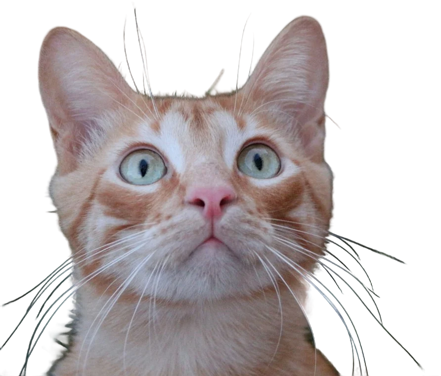
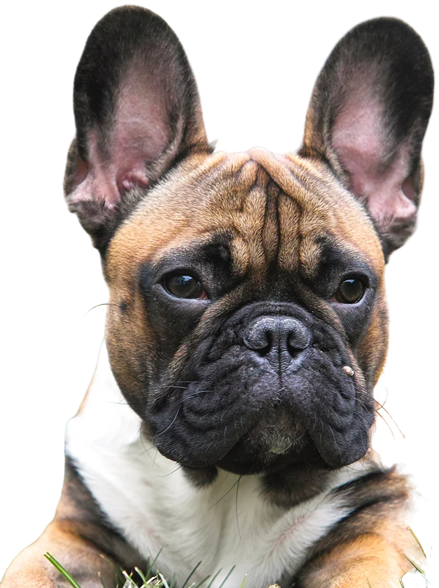

Born to be
Born to be curious.

Everything for their next adventure.
WILDPAW — Discover their world. Tienda premium para perros, gatos y mundo acuático.

Their world. Your adventure.
Accesorios premium para perros, gatos y vida acuática. Diseñados para quienes viven a su lado cada aventura.
Explore the worldDive into their world.
Nueve especies fotografiadas: pez payaso, pez león, garibaldi, cirujano amarillo y más, nadando entre tus letras.
Ver acuáticos